For each histogram below, describe the shape and presence of outliers.
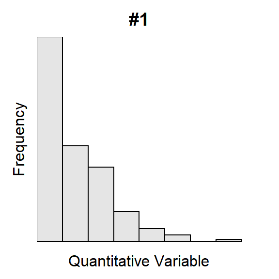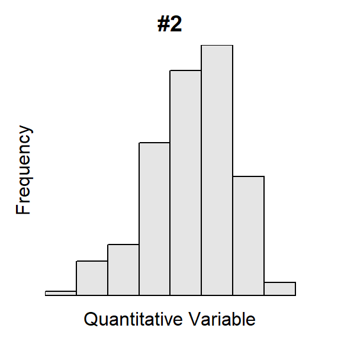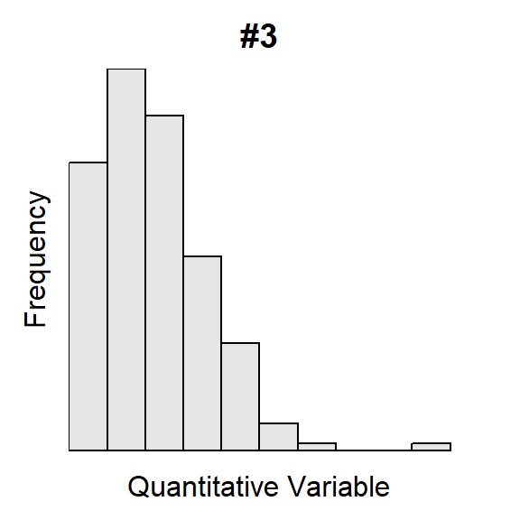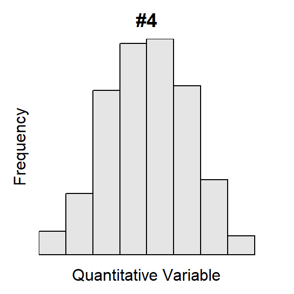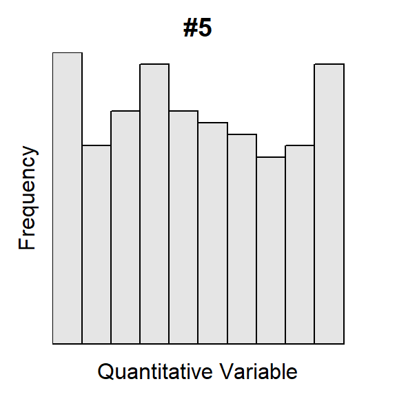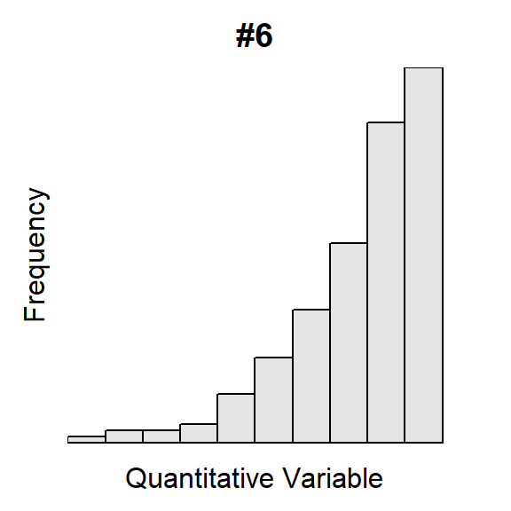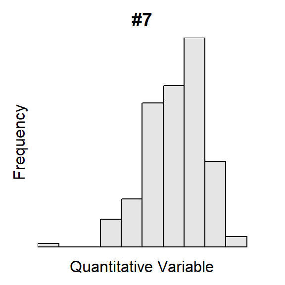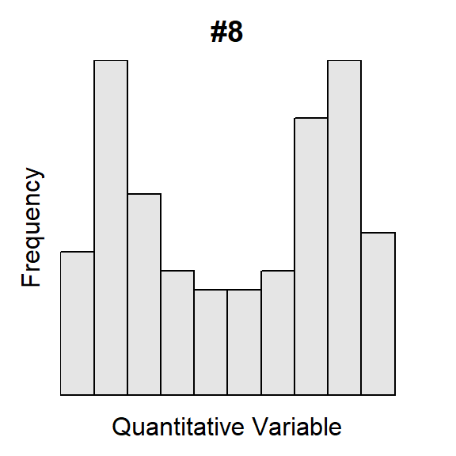
The U.S. Census asked individuals 16 years old and older “How long in minutes is your one-way commute to work each day?”. The mean for individuals from each state was recorded with summary results shown in Figure 1 and Table 1. Perform a thorough EDA with these results.
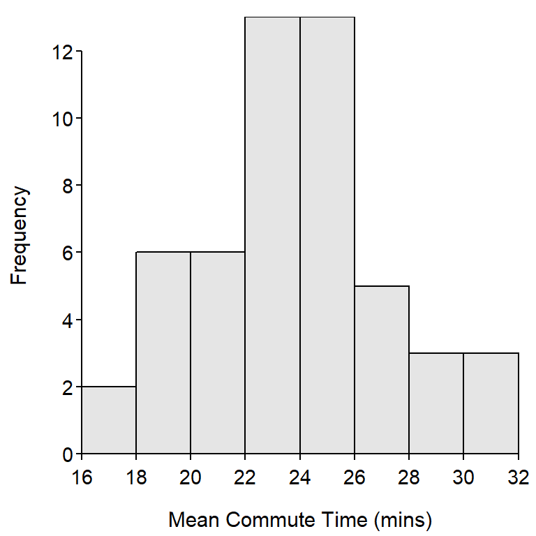
Figure 1: Histogram for the mean commute time (mins) for each state.
Table 1: Summary statistics for the mean commute time (mins) for each state.
n mean sd min Q1 median Q3 max
51.00 23.75 3.54 16.90 21.65 23.80 25.80 32.00 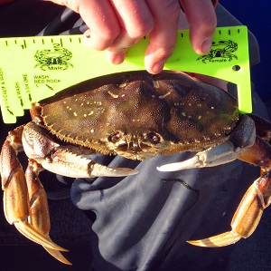
Scientists were concered about the overexploitation of Dungeness Crabs (Cancer magister) in some California waters. To better manage this species they examined the post-molt carapace length from a large sample of crabs. Their results are displayed in Figure 2 and Table 2. Perform a thorough EDA with these results.
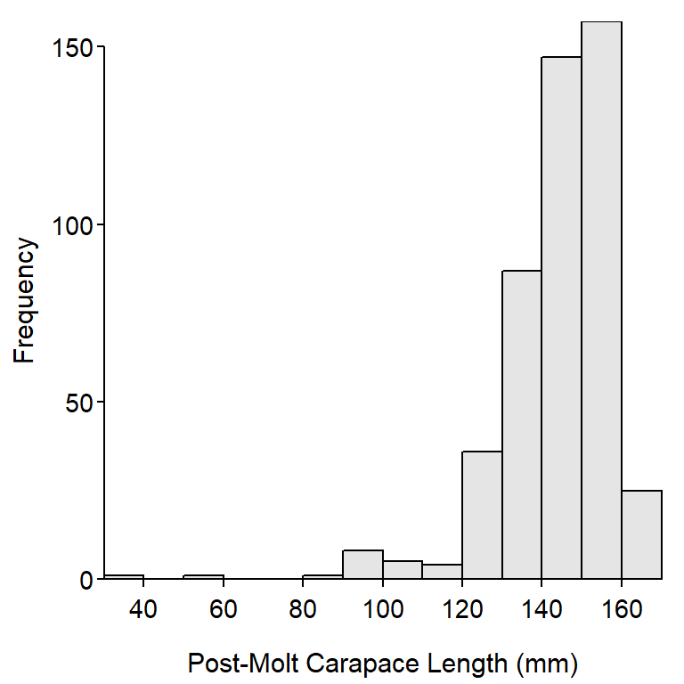
Figure 2: Histogram for post-smolt carapace length (mm) of Dungeness crab collected in California.
Table 2: Summary statistics for post-smolt carapace length (mm) of Dungeness crab collected in California.
n mean sd min Q1 median Q3 max
472.0 143.9 14.6 38.8 138.0 147.4 153.4 166.8 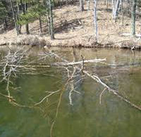 Coarse woody debris (CWD) in lakes is important for aquatic systems as it provides refuge for young fish and invertebrates as well as providing areas for periphyton to grow. Coarse woody debris was studied in the north basin of Allequash Lake in northern Wisconsin. Among other things, the researchers recorded the diameter (cm) of CWD found in the lake littoral zone and a qualitative measure of the degree to which the location where the CWD was found was exposed to winds (low or medium). The data (sampled from information on the North Temperate Lakes Long Term Ecological Research website) they observed are shown below.
diameter 21 15 18 23 18 17 19 17 15 22 16 20 16 17 18 15 16 24 24 23 exposure med med med low med low med med med med med med low med med med med low med med diameter 18 17 19 17 17 15 17 18 19 31 25 15 17 34 16 18 19 15 16 15 exposure med med med med med med med med low med med med med low low med med med low med diameter 20 23 34 20 17 20 15 34 18 24 exposure med med low med med med med med med med
[HINT: these are the same data that you entered in a previous class exercise; use that file and R script here.] Load these data into R to answer the following questions.
diameter.diameter separately for the low- and medium-exposure sites.